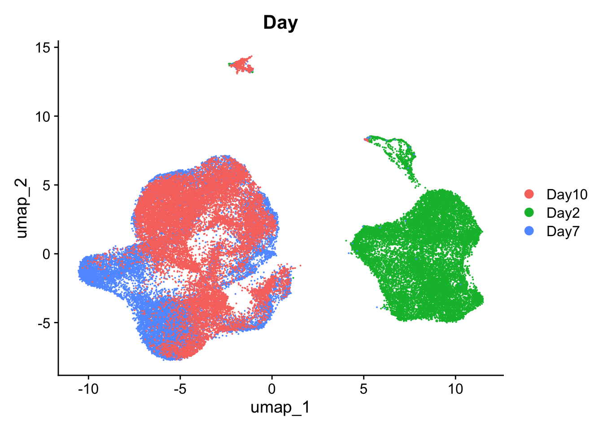

Last updated: 2023-11-01
Checks: 7 0
Knit directory: spatialsnippets/
This reproducible R Markdown analysis was created with workflowr (version 1.7.0). The Checks tab describes the reproducibility checks that were applied when the results were created. The Past versions tab lists the development history.
Great! Since the R Markdown file has been committed to the Git repository, you know the exact version of the code that produced these results.
Great job! The global environment was empty. Objects defined in the global environment can affect the analysis in your R Markdown file in unknown ways. For reproduciblity it’s best to always run the code in an empty environment.
The command set.seed(20231017) was run prior to running
the code in the R Markdown file. Setting a seed ensures that any results
that rely on randomness, e.g. subsampling or permutations, are
reproducible.
Great job! Recording the operating system, R version, and package versions is critical for reproducibility.
Nice! There were no cached chunks for this analysis, so you can be confident that you successfully produced the results during this run.
Great job! Using relative paths to the files within your workflowr project makes it easier to run your code on other machines.
Great! You are using Git for version control. Tracking code development and connecting the code version to the results is critical for reproducibility.
The results in this page were generated with repository version 8b1c005. See the Past versions tab to see a history of the changes made to the R Markdown and HTML files.
Note that you need to be careful to ensure that all relevant files for
the analysis have been committed to Git prior to generating the results
(you can use wflow_publish or
wflow_git_commit). workflowr only checks the R Markdown
file, but you know if there are other scripts or data files that it
depends on. Below is the status of the Git repository when the results
were generated:
Ignored files:
Ignored: .Rhistory
Ignored: .Rproj.user/
Ignored: analysis/d_DigitsDish.nb.html
Ignored: analysis/e_DEPseudobulk.nb.html
Ignored: analysis/e_DEWithoutReps.nb.html
Ignored: renv/library/
Ignored: renv/staging/
Note that any generated files, e.g. HTML, png, CSS, etc., are not included in this status report because it is ok for generated content to have uncommitted changes.
These are the previous versions of the repository in which changes were
made to the R Markdown (analysis/d_DigitsDish.Rmd) and HTML
(docs/d_DigitsDish.html) files. If you’ve configured a
remote Git repository (see ?wflow_git_remote), click on the
hyperlinks in the table below to view the files as they were in that
past version.
| File | Version | Author | Date | Message |
|---|---|---|---|---|
| Rmd | 8b1c005 | Sarah Williams | 2023-11-01 | wflow_publish("analysis") |
Preparation of data from: Digits in a dish: An in vitro system to assess the molecular genetics of hand/foot development at single-cell resolution Allison M. Fuiten, Yuki Yoshimoto, Chisa Shukunami, H. Scott Stadler. Fronteirs in Cell and Developmental Biology 2023.
https://www.frontiersin.org/articles/10.3389/fcell.2023.1135025/full
Data from GEO, GSE221883. https://www.ncbi.nlm.nih.gov/geo/query/acc.cgi?acc=GSE221883
Data processing here is simplified for demonstrative purposes - and differs from that used in the paper!
library(Seurat)Loading required package: SeuratObjectLoading required package: sp
Attaching package: 'SeuratObject'The following object is masked from 'package:base':
intersectlibrary(tidyverse)── Attaching core tidyverse packages ──────────────────────── tidyverse 2.0.0 ──
✔ dplyr 1.1.3 ✔ readr 2.1.4
✔ forcats 1.0.0 ✔ stringr 1.5.0
✔ ggplot2 3.4.4 ✔ tibble 3.2.1
✔ lubridate 1.9.3 ✔ tidyr 1.3.0
✔ purrr 1.0.2 ── Conflicts ────────────────────────────────────────── tidyverse_conflicts() ──
✖ dplyr::filter() masks stats::filter()
✖ dplyr::lag() masks stats::lag()
ℹ Use the conflicted package (<http://conflicted.r-lib.org/>) to force all conflicts to become errorsDownload counts matricies from GEO. Note the read10X function used later expects a folder per sample with files exactly named barcodes.tsv.gz/features.tsv.gz and matrix.mtx.gz
wget https://www.ncbi.nlm.nih.gov/geo/download/?acc=GSE221883&format=file
tar -xzf GSE221883_RAW.tar
mkdir data_for_seurat
mkdir data_for_seurat
mkdir seurat_objects
for sample in GSM6908653_Day2_A GSM6908655_Day7_A GSM6908657_Day10_A GSM6908654_Day2_B GSM6908656_Day7_B GSM6908658_Day10_B
do
echo ${sample}
mkdir data_for_seurat/${sample}
cp ${sample}_barcodes.tsv.gz data_for_seurat/${sample}/barcodes.tsv.gz
cp ${sample}_features.tsv.gz data_for_seurat/${sample}/features.tsv.gz
cp ${sample}_matrix.mtx.gz data_for_seurat/${sample}/matrix.mtx.gz
doneContains the following files:
GSM6908653_Day2_A_barcodes.tsv.gz
GSM6908653_Day2_A_features.tsv.gz
GSM6908653_Day2_A_matrix.mtx.gz
GSM6908654_Day2_B_barcodes.tsv.gz
GSM6908654_Day2_B_features.tsv.gz
GSM6908654_Day2_B_matrix.mtx.gz
GSM6908655_Day7_A_barcodes.tsv.gz
GSM6908655_Day7_A_features.tsv.gz
GSM6908655_Day7_A_matrix.mtx.gz
GSM6908656_Day7_B_barcodes.tsv.gz
GSM6908656_Day7_B_features.tsv.gz
GSM6908656_Day7_B_matrix.mtx.gz
GSM6908657_Day10_A_barcodes.tsv.gz
GSM6908657_Day10_A_features.tsv.gz
GSM6908657_Day10_A_matrix.mtx.gz
GSM6908658_Day10_B_barcodes.tsv.gz
GSM6908658_Day10_B_features.tsv.gz
GSM6908658_Day10_B_matrix.mtx.g data_dir <- '/Users/s2992547/data_local/datasets/GSE221883_DigitsDish_ScRNAseq/data_for_seurat/'
seurat_objects_dir <- '/Users/s2992547/data_local/datasets/GSE221883_DigitsDish_ScRNAseq/seurat_objects/'samples <- list.files(data_dir)
sample_dirs <- file.path(data_dir, samples)
names(sample_dirs) <- samples
data <- Read10X(data.dir = sample_dirs)
so <- CreateSeuratObject(counts = data, project = "Fuiten2023")
so[["percent.mt"]] <- PercentageFeatureSet(so, pattern = "^mt-")VlnPlot(so, features = c("nFeature_RNA"))Warning: Default search for "data" layer in "RNA" assay yielded no results;
utilizing "counts" layer instead.VlnPlot(so, features = c("nCount_RNA")) + scale_y_log10()Warning: Default search for "data" layer in "RNA" assay yielded no results;
utilizing "counts" layer instead.Scale for y is already present.
Adding another scale for y, which will replace the existing scale.VlnPlot(so, features = c("percent.mt"))Warning: Default search for "data" layer in "RNA" assay yielded no results;
utilizing "counts" layer instead.Add basic sample information.
anno_table <- as_tibble(str_split_fixed(rownames(so@meta.data), "_", n = 4 ))Warning: The `x` argument of `as_tibble.matrix()` must have unique column names if
`.name_repair` is omitted as of tibble 2.0.0.
ℹ Using compatibility `.name_repair`.
This warning is displayed once every 8 hours.
Call `lifecycle::last_lifecycle_warnings()` to see where this warning was
generated.colnames(anno_table) <- c("Accession", "Day","Rep","Cell")
so[["Sample"]] <- paste(anno_table$Day, anno_table$Rep, anno_table$Accession, sep="_")
so[["Accession"]] <- anno_table$Accession
so[["Day"]] <- anno_table$Day
so[["Rep"]] <- anno_table$Rep
so[["Cell"]] <- anno_table$CellDo routine processing (absolutely not optimised for this study, just need something reasonable.)
so <- subset(so, subset = nFeature_RNA > 2000 & percent.mt < 25)
so <- NormalizeData(so)Normalizing layer: countsso <- FindVariableFeatures(so, selection.method = "vst", nfeatures = 2000)Finding variable features for layer countsso <- ScaleData(so) # No cc regression.Centering and scaling data matrixso <- RunPCA(so, features = VariableFeatures(object = so))PC_ 1
Positive: Tmsb4x, Actb, Basp1, Lgals1, Tmsb10, Tagln, Actg1, Tpm4, Abracl, Tuba1a
Tpm1, Tagln2, Myl9, Acta2, Pdlim7, Jpt1, Hmga2, Dstn, Filip1l, Tpm2
Myl12a, Cks2, Cald1, Cnn1, Flna, Pclaf, Csrp1, Msn, Actn1, Rtn4
Negative: Col2a1, Col9a2, Col9a3, Col11a1, Hapln1, Col11a2, Acan, Col9a1, Matn1, Mia
Col27a1, Cnmd, Snorc, Comp, Susd5, S100b, Fgfr3, Csgalnact1, Papss2, Matn4
Matn3, Chadl, Bnip3, Ncmap, Scrg1, Cpe, Scin, Fbln7, Higd1a, Cmtm5
PC_ 2
Positive: Hist1h1e, Hmgb2, Stmn1, Lmnb1, Hist1h2ap, Hist1h4d, Hist1h1b, Hist1h2ae, Hmgb3, Top2a
Hist1h3c, Hist1h4h, Mki67, Pclaf, Smc2, Hist1h3e, Kif15, H1fx, Cdca8, Kif11
Nusap1, Hist1h1d, Nnat, Hist1h1a, H2afx, Cenpe, Sox11, Knl1, Birc5, Spc25
Negative: Sparc, S100a6, Bgn, Timp1, Gsn, Col1a2, Tspo, Timp2, Lmna, Anxa2
Igfbp7, Col1a1, Thbs1, Vim, Nupr1, Lox, Ctsl, Mmp23, Anxa1, Serpinb6a
Ifitm3, Ctsd, Ccn4, S100a4, Cst3, Ass1, Cyba, Cdkn2a, Cryab, Fbln5
PC_ 3
Positive: Cald1, Tpm1, Myh10, Fermt2, Sparc, Fn1, Tagln, Myl9, Col12a1, Cnn2
Thbs1, Lpp, Col1a1, Igfbp7, Mfap4, Sox4, Ltbp1, Acta2, Nxn, Prss23
Cnn1, Fbln2, Palld, Tpm2, Vcl, Ccn4, Col4a1, Phldb2, Ptn, Fbln5
Negative: Fcer1g, Tyrobp, Trem2, Laptm5, Spi1, Csf1r, Ctss, Lcp1, C3ar1, Rac2
Pld4, Cd68, Clec4d, Coro1a, Cd14, Ncf4, Fcgr3, Adgre1, Mpeg1, Ncf2
Gmfg, C5ar1, Ms4a7, Msr1, Ms4a6d, Cd53, Fyb, Cxcl2, Lilrb4a, C1qa
PC_ 4
Positive: Col11a1, Prc1, Hmmr, Nusap1, Anln, Ckap2l, Cdk1, Top2a, Mki67, Smc4
Kif23, Tpx2, Depdc1a, Tubb4b, Tuba1c, Pbk, Cenpf, Cks2, Kif11, Aurkb
Ube2c, Racgap1, Plk1, Ccna2, Spc25, Cdca3, Cdca8, Birc5, Knl1, Sgo2a
Negative: Tnnt1, Actc1, Ttn, Myog, Neb, Arpp21, Myod1, Myl1, Chrna1, Rbm24
Mylpf, Tnnc1, Atp2a1, Mymk, Rapsn, Cdh15, Klhl41, Mylk4, Tnnt2, Smyd1
Fitm1, Myh3, Tnni1, Kremen2, Mymx, Lrrn1, Mrln, Ank1, Fndc5, Apobec2
PC_ 5
Positive: Sox4, Vcan, Mfap4, Gsta4, Bcl11a, Fos, Chd3, Sfrp2, Hmcn1, Dnm3os
Gas2, Marcksl1, Gas1, Foxp2, Robo2, Csrp2, Pdgfra, Crabp2, Nnat, Ebf1
Mex3b, Bex4, Creb5, Amot, Epha7, Sox11, Gm26771, Scx, Tmsb10, Mab21l2
Negative: Tubb4b, Snorc, Tubb2a, Hapln1, Matn1, Acan, Prc1, Col11a2, Hmmr, Matn3
Comp, Tuba1c, Ube2c, Nusap1, Tubb6, Cks2, Anln, Cnmd, Tpx2, Plk1
Cdc20, Lgals3, Racgap1, Ccna2, Cdk1, Ckap2l, Depdc1a, Col9a3, Pbk, Cdca8 so <- RunUMAP(so, dims = 1:20)Warning: The default method for RunUMAP has changed from calling Python UMAP via reticulate to the R-native UWOT using the cosine metric
To use Python UMAP via reticulate, set umap.method to 'umap-learn' and metric to 'correlation'
This message will be shown once per session16:30:24 UMAP embedding parameters a = 0.9922 b = 1.11216:30:24 Read 49947 rows and found 20 numeric columns16:30:24 Using Annoy for neighbor search, n_neighbors = 3016:30:24 Building Annoy index with metric = cosine, n_trees = 500% 10 20 30 40 50 60 70 80 90 100%[----|----|----|----|----|----|----|----|----|----|**************************************************|
16:30:27 Writing NN index file to temp file /var/folders/tp/b078yqdd4ydff9fx87lfttpj_sc0x3/T//RtmpE5kviT/file59c83e162b39
16:30:27 Searching Annoy index using 1 thread, search_k = 3000
16:30:38 Annoy recall = 100%
16:30:39 Commencing smooth kNN distance calibration using 1 thread with target n_neighbors = 30
16:30:39 Initializing from normalized Laplacian + noise (using RSpectra)
16:30:40 Commencing optimization for 200 epochs, with 2105356 positive edges
16:30:58 Optimization finishedso <- FindNeighbors(so, dims = 1:20)Computing nearest neighbor graph
Computing SNNso <- FindClusters(so)Modularity Optimizer version 1.3.0 by Ludo Waltman and Nees Jan van Eck
Number of nodes: 49947
Number of edges: 1587201
Running Louvain algorithm...
Maximum modularity in 10 random starts: 0.8881
Number of communities: 20
Elapsed time: 9 secondsElbowPlot(so,ndims = 30)UMAP views
DimPlot(so)DimPlot(so, group.by='Sample')DimPlot(so, group.by='Day')
DimPlot(so, split.by='Sample', ncol=3)saveRDS(so, file.path(seurat_objects_dir,"Fuiten2023_DigitsInDish_00_load.RDS"))
sessionInfo()R version 4.3.1 (2023-06-16)
Platform: aarch64-apple-darwin20 (64-bit)
Running under: macOS Ventura 13.5
Matrix products: default
BLAS: /Library/Frameworks/R.framework/Versions/4.3-arm64/Resources/lib/libRblas.0.dylib
LAPACK: /Library/Frameworks/R.framework/Versions/4.3-arm64/Resources/lib/libRlapack.dylib; LAPACK version 3.11.0
locale:
[1] en_US.UTF-8/en_US.UTF-8/en_US.UTF-8/C/en_US.UTF-8/en_US.UTF-8
time zone: Australia/Brisbane
tzcode source: internal
attached base packages:
[1] stats graphics grDevices datasets utils methods base
other attached packages:
[1] lubridate_1.9.3 forcats_1.0.0 stringr_1.5.0 dplyr_1.1.3
[5] purrr_1.0.2 readr_2.1.4 tidyr_1.3.0 tibble_3.2.1
[9] ggplot2_3.4.4 tidyverse_2.0.0 Seurat_5.0.0 SeuratObject_5.0.0
[13] sp_2.1-1 workflowr_1.7.0
loaded via a namespace (and not attached):
[1] RColorBrewer_1.1-3 rstudioapi_0.15.0 jsonlite_1.8.7
[4] magrittr_2.0.3 spatstat.utils_3.0-4 farver_2.1.1
[7] rmarkdown_2.23 fs_1.6.3 vctrs_0.6.3
[10] ROCR_1.0-11 spatstat.explore_3.2-5 htmltools_0.5.5
[13] sass_0.4.7 sctransform_0.4.1 parallelly_1.36.0
[16] KernSmooth_2.23-22 bslib_0.5.0 htmlwidgets_1.6.2
[19] ica_1.0-3 plyr_1.8.9 plotly_4.10.3
[22] zoo_1.8-12 cachem_1.0.8 whisker_0.4.1
[25] igraph_1.5.1 mime_0.12 lifecycle_1.0.3
[28] pkgconfig_2.0.3 Matrix_1.6-1.1 R6_2.5.1
[31] fastmap_1.1.1 fitdistrplus_1.1-11 future_1.33.0
[34] shiny_1.7.5.1 digest_0.6.33 colorspace_2.1-0
[37] patchwork_1.1.3 ps_1.7.5 rprojroot_2.0.3
[40] tensor_1.5 RSpectra_0.16-1 irlba_2.3.5.1
[43] labeling_0.4.3 progressr_0.14.0 timechange_0.2.0
[46] fansi_1.0.5 spatstat.sparse_3.0-3 httr_1.4.6
[49] polyclip_1.10-6 abind_1.4-5 compiler_4.3.1
[52] withr_2.5.1 fastDummies_1.7.3 highr_0.10
[55] MASS_7.3-60 tools_4.3.1 lmtest_0.9-40
[58] httpuv_1.6.11 future.apply_1.11.0 goftest_1.2-3
[61] glue_1.6.2 callr_3.7.3 nlme_3.1-162
[64] promises_1.2.0.1 grid_4.3.1 Rtsne_0.16
[67] getPass_0.2-2 cluster_2.1.4 reshape2_1.4.4
[70] generics_0.1.3 gtable_0.3.4 spatstat.data_3.0-3
[73] tzdb_0.4.0 hms_1.1.3 data.table_1.14.8
[76] utf8_1.2.4 spatstat.geom_3.2-7 RcppAnnoy_0.0.21
[79] ggrepel_0.9.4 RANN_2.6.1 pillar_1.9.0
[82] spam_2.10-0 RcppHNSW_0.5.0 later_1.3.1
[85] splines_4.3.1 lattice_0.21-8 renv_1.0.0
[88] survival_3.5-5 deldir_1.0-9 tidyselect_1.2.0
[91] miniUI_0.1.1.1 pbapply_1.7-2 knitr_1.43
[94] git2r_0.32.0 gridExtra_2.3 scattermore_1.2
[97] xfun_0.39 matrixStats_1.0.0 stringi_1.7.12
[100] lazyeval_0.2.2 yaml_2.3.7 evaluate_0.21
[103] codetools_0.2-19 cli_3.6.1 uwot_0.1.16
[106] xtable_1.8-4 reticulate_1.34.0 munsell_0.5.0
[109] processx_3.8.2 jquerylib_0.1.4 Rcpp_1.0.11
[112] globals_0.16.2 spatstat.random_3.2-1 png_0.1-8
[115] parallel_4.3.1 ellipsis_0.3.2 dotCall64_1.1-0
[118] listenv_0.9.0 viridisLite_0.4.2 scales_1.2.1
[121] ggridges_0.5.4 crayon_1.5.2 leiden_0.4.3
[124] rlang_1.1.1 cowplot_1.1.1